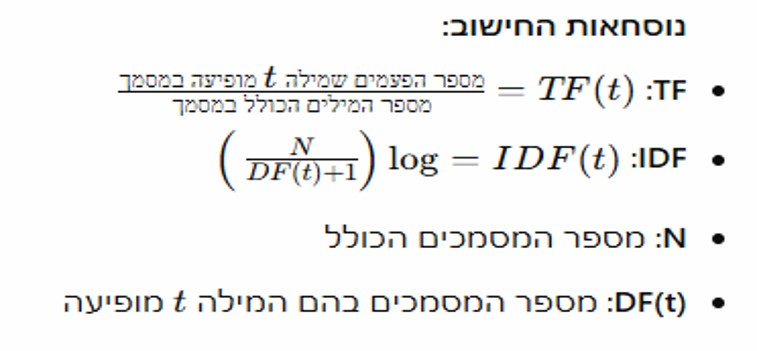
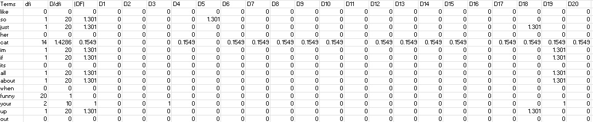
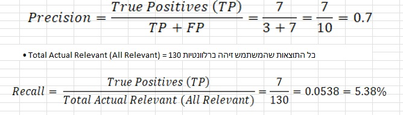
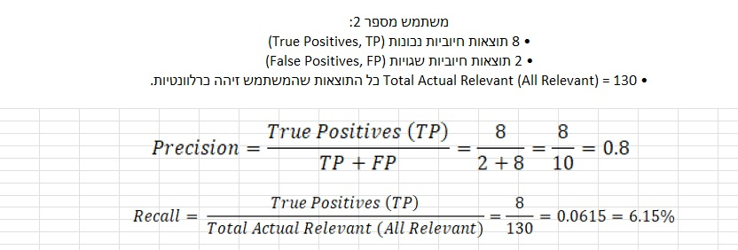

אתר מסכם פרוייקט
מגישים: דניאל פריימוביץ, ניצן עזרא, ליאור בוזגלו, עומר זומרשטיין
אנו מתמקדים בבניית זחלן לאתר האינטרנטי Reddit, אתר פורומים מוביל עבור מגוון רחב של נושאים.
כל אדם שנכנס יוצר לעצמו משתמש, יכול לבצע חיפושים ולהגיב על פוסטים, בהתבסס על מידע זה אנו ניצור שאילתות
בזמן אמת.
האתר מתמקד באיסוף מידע מתתי-פורומים שונים של Reddit, במטרה להציג למשתמשים תוצאות ותכנים לפי מילות מפתח או או שאילתה.
באתר ניתן למצוא מגוון פוסטים ודיונים, אשר עוברים עיבוד וסינון כדי להבליט את התכנים הרלוונטיים ביותר למשתמש—למשל,
פוסטים בעלי מעורבות גבוהה (לייקים, תגובות), וכן פוסטים המקושרים לתת-פורומים מובילים (Subreddits).
שאילתה 1:
“איזה פוסטים על חתולים מצחיקים קיימים מהחודש האחרון תחת קטגוריה HOT."
(בreddit אין אופציה לבצע את החיפוש הזה באופן ישיר)
פרטי מידע נדרשים:
פילוח נושאי פוסטים לפי מילת מפתח (pets/cats).
ספירת פוסטים לכל Subreddit בתחום החתולים.
נתונים לגבי תדירות הפרסום ומועדי הפרסום בכל Subreddit.
כמות לייקים ותגובות לכל פוסט
שאילתה 2:
“אילו פוסטים זכו ליחס הגבוה ביותר בין לייקים (Upvotes) לתגובות, בנושא מסויימים?”
פרטי מידע נדרשים:
איתור פוסטים רלוונטיים למילות מפתח כגון “חתולים מצחיקים”, “חיות מצחיקות” או “דברים מצחיקים”.
נתוני לייקים (Upvotes) ונתוני תגובות (Comments) עבור הפוסטים שנמצאו.
חישוב היחס (לייקים/תגובות) לכל פוסט.
דירוג הפוסטים מהיחס הגבוה ביותר לנמוך ביותר.
שאילתה 3:
“מה הם הפוסטים על חתולים מצחיקים שעוררו הכי הרבה מחלוקות היום. ”
פרטי מידע נדרשים:
פילוח פוסטים לפי מילת מפתח (cats/funny).
נתוני לייקים (Upvotes) ותגובות (Comments) כדי למדוד פופולריות/מעורבות.
שימוש בתאריכים ושעות על מנת לקבל תוצאות רלוונטיות ליום הנוכחי.
.env השומר את הTOKEN הספציפי שקיבלנו בשביל גישה לAPI שמסופק על ידי REDDIT עצמם
REDDIT_CLIENT_ID="nmcA32g8dnE_Dc3cBfr38Q"
REDDIT_CLIENT_SECRET="ECvq3EUxRiJ7P3F587RLoCmdkCwncw"
REDDIT_USER_AGENT="my_reddit_search/1.0 by u/Precise_Pioneer"
קוד מנוע החיפוש עצמו:
import praw
import os
import re
import pandas as pd
from collections import Counter
from sklearn.feature_extraction.text import TfidfVectorizer
from dotenv import load_dotenv
# Load environment variables
load_dotenv()
# Initialize Reddit API
reddit = praw.Reddit(
client_id=os.getenv("REDDIT_CLIENT_ID"),
client_secret=os.getenv("REDDIT_CLIENT_SECRET"),
user_agent=os.getenv("REDDIT_USER_AGENT"),
)
print("Reddit API initialized. Read-only mode:", reddit.read_only)
# Define stopwords
STOPWORDS = set([
"and", "or", "the", "is", "in", "to", "a", "of", "on", "for", "with", "it", "as", "at", "this", "that",
"an", "be", "are", "by", "was", "were", "from", "has", "have", "had", "but", "not", "you", "we", "they", "he", "she", "i", "me", "my"
])
# Function to clean text (remove emojis, stopwords, special characters)
def clean_text(text):
text = re.sub(r"[^\w\s]", "", text)
text = text.lower()
words = text.split()
filtered_words = [word for word in words if word not in STOPWORDS]
return " ".join(filtered_words)
# Function to search Reddit and save results to Excel
def search_reddit_to_excel(subreddit, query, limit, output_file="reddit_results.xlsx"):
try:
print(f"Searching Reddit for '{query}' in r/{subreddit}...")
results = reddit.subreddit(subreddit).search(
query=query,
limit=limit,
sort="hot",
time_filter="month"
)
data = []
for post in results:
data.append({
"Title": post.title,
"Body": post.selftext,
"Reddit Post URL": f"https://reddit.com{post.permalink}",
"Score": post.score,
"Comments": post.num_comments,
"Subreddit": post.subreddit.display_name,
})
if data:
df = pd.DataFrame(data)
df.to_excel(output_file, index=False)
print(f"Results saved to {output_file}")
else:
print(f"No results found for '{query}' in r/{subreddit}")
except Exception as e:
print(f"An error occurred: {e}")
raise
# Function to calculate TF-IDF
def calculate_tfidf(input_file="reddit_results.xlsx", query="Funny cats"):
try:
df = pd.read_excel(input_file)
df["Content"] = df["Title"].astype(str) + " " + df["Body"].astype(str)
cleaned_content = df["Content"].apply(clean_text)
vectorizer = TfidfVectorizer()
tfidf_matrix = vectorizer.fit_transform(cleaned_content)
terms = vectorizer.get_feature_names_out()
query_terms = clean_text(query).split()
print("\nTF-IDF Scores for Query Terms:")
for term in query_terms:
if term in terms:
term_index = vectorizer.vocabulary_.get(term)
tfidf_score = tfidf_matrix[:, term_index].toarray().sum()
print(f"{term}: {tfidf_score}")
else:
print(f"{term}: Not found in the results.")
return vectorizer, tfidf_matrix
except Exception as e:
print(f"An error occurred while calculating TF-IDF: {e}")
raise
# Function to calculate PageRank
def calculate_pagerank(input_file="reddit_results.xlsx", output_file="ranked_results.xlsx"):
try:
df = pd.read_excel(input_file)
df["Relevance"] = df["Score"] # Assuming relevance is based on the score
# Normalize engagement scores
total_upvotes = df["Score"].sum() or 1
total_comments = df["Comments"].sum() or 1
df["Engagement Score"] = (
0.7 * df["Score"] / total_upvotes + 0.3 * df["Comments"] / total_comments
)
# Combine relevance and engagement
df["PageRank"] = 0.7 * df["Relevance"] + 0.3 * df["Engagement Score"]
# Rank posts
ranked_df = df.sort_values(by="PageRank", ascending=False)
# Save ranked results
ranked_df.to_excel(output_file, index=False)
print(f"Ranked results saved to '{output_file}'")
except Exception as e:
print(f"An error occurred while calculating PageRank: {e}")
raise
# Main script
if __name__ == "__main__":
try:
search_reddit_to_excel("all", "Funny cats", limit=1000)
except Exception as e:
print(f"Error during Reddit search: {e}")
try:
calculate_tfidf(query="Funny cats")
except Exception as e:
print(f"Error during TF-IDF calculation: {e}")
try:
calculate_pagerank()
except Exception as e:
print(f"Error during PageRank calculation: {e}")
PRAW (Python Reddit API Wrapper) ספרייה זו מאפשרת גישה ל-Reddit API, השתמשנו בה כדי לשלוף פוסטים מ-Reddit על פי מילות מפתח ותנאים מוגדרים מראש.
dotenv כלי זה עוזר לטעון משתני סביבה מקובץ .env. הוא שימושי כדי להגן על המידע הרגיש כמו מזהים וסיסמאות של ה-API ולאפשר שינוי קל של ההגדרות הסביבתיות.
pandas ספרייה זו משמשת לניתוח וניהול נתונים ביעילות. בקוד שלנו, השתמשנו ב-pandas כדי ליצור DataFrame של התוצאות ולבצע חישובים ודירוגים שונים על פי נתוני המעורבות של הפוסטים.
NLTK (Natural Language Toolkit) השתמשנו ב-PorterStemmer מתוך ה-NLTK כדי לבצע סטמינג למילים בטקסטים.
re (Regular Expressions) ספרייה זו מאפשרת עבודה עם ביטויים רגולריים כדי לבצע ניקוי של הטקסטים על ידי הסרת תווים מיוחדים והמרת הטקסט לאותיות קטנות.
כל עוד מבקשים כמות מוגבלת של קבצים (לדוגמא: 20) זמן ריצת השאילתה נע בין 0.50 ל-0.8 שניות, תלוי בעומס על ה-API באותו רגע ומורכבות השאילתה ששלחנו.
נוסף על כך מתבצע חישוב TFIDF שתלוי בזמן עיבוד המעבד של המחשב ולוקח בין 0.1 ל-0.2. שימוש במטמון יכול לשפר זמן זה במידה ומשתמשים בשאילתות אשר חוזרות על עצמן.
Query:The hottest posts about cats from the past month
INVERTED INDEX:
word posts
like 25,44,48,56,59,60,65,66,69,72,73,75,77,84,89,90,92,94,95,97,99,100,101,103,104,108,109,110,111,114,115,121,122,124,126,127,128,129,132,135,136,137,140,144,146,147,151,153,155,156,158,160,163,165,166,167,168,169,170,171,172,174,175,177,178,179,182,183,187,189,191,192,193,195,198,199,201,202,204,205,206,207,208,209,211,212,213,215,216,218,219,224,225,227,228,229,230,232,233,234,235,237,238,239,240,241,243,244,245,246,247,248,249
so 5,24,36,42,47,51,54,55,56,58,59,60,63,66,72,75,77,83,89,90,92,93,94,95,97,98,99,100,101,102,103,104,107,111,113,115,121,122,124,125,126,127,129,132,133,135,137,138,140,142,143,144,145,146,148,150,151,153,155,156,158,163,164,165,166,167,168,169,170,171,172,173,174,175,176,177,178,179,181,182,183,187,189,192,193,195,197,198,199,200,201,202,203,204,206,208,209,211,212,213,215,216,217,218,219,220,224,225,226,227,228,229,230,231,232,233,234,237,238,239,240,241,242,243,244,245,246,247,248,249
just 18,24,27,39,41,43,51,52,54,57,58,61,62,63,66,71,72,73,75,77,84,85,88,89,90,93,95,97,98,99,100,101,103,107,109,113,121,123,124,125,126,127,128,129,132,134,135,137,140,142,143,144,145,146,147,151,153,155,156,158,163,165,166,167,168,169,170,171,174,175,176,177,178,179,181,182,183,186,187,188,189,191,192,193,194,195,197,198,199,201,202,204,208,209,213,215,216,217,218,219,224,225,226,227,228,229,230,231,233,234,235,237,238,239,240,241,243,244,245,246,247,248,249
her 21,39,44,53,57,59,64,71,75,84,93,95,97,101,102,103,110,113,127,129,134,135,144,145,146,148,150,153,155,165,169,170,172,173,174,178,179,184,197,199,202,204,205,206,209,217,218,219,224,228,230,232,233,235,238,239,241,243,244,245,246,248,249
cat 4,6,7,8,9,10,12,13,14,15,17,18,19,20,21,22,24,25,26,27,30,31,32,34,37,38,39,40,41,44,45,46,47,49,50,52,53,54,55,56,57,58,59,61,62,63,65,66,69,70,71,72,73,74,75,77,78,83,85,86,87,88,90,92,93,94,95,96,97,99,100,101,102,103,104,105,107,109,110,112,113,114,117,122,123,124,125,126,127,128,129,130,132,133,136,137,139,140,142,143,144,145,146,148,149,151,152,153,154,155,156,158,161,163,164,165,166,167,168,169,171,172,173,174,175,176,177,179,180,181,183,184,185,186,187,188,191,192,193,194,196,197,198,199,200,201,202,203,205,206,207,209,210,212,213,217,219,220,224,225,226,227,229,231,232,233,234,237,238,239,240,241,242,243,244,245,246,249
im 19,38,48,49,59,61,66,77,92,93,95,98,100,102,103,104,106,108,109,115,117,118,121,124,125,126,128,129,132,135,138,140,143,144,148,150,151,155,156,158,160,163,165,166,167,168,169,170,171,175,176,177,178,179,181,182,183,187,188,192,193,194,195,198,199,201,202,206,209,211,213,215,216,218,219,223,224,225,226,227,229,230,231,232,233,235,237,238,243,244,245,246,247,248,249
if 19,25,48,52,54,59,66,71,75,77,80,84,85,87,93,95,98,99,100,101,103,107,108,109,110,115,121,122,124,125,126,128,132,134,135,138,140,142,143,144,146,147,148,150,151,153,156,158,160,163,164,165,166,167,168,169,170,171,174,175,177,178,179,181,182,183,186,187,192,193,194,197,198,199,201,202,204,206,207,208,209,213,215,216,218,219,224,225,226,227,228,229,230,232,233,234,235,237,238,239,240,241,242,243,244,245,246,247,248,249
its 24,42,52,53,55,57,58,62,63,69,70,73,75,84,85,89,90,92,93,94,95,99,100,101,103,108,109,112,114,115,118,122,123,124,125,131,132,134,135,137,145,146,148,151,153,155,156,164,165,167,170,171,172,174,175,177,178,179,182,187,192,193,194,197,198,199,200,201,202,204,206,207,208,209,211,212,213,216,217,219,224,225,226,227,228,229,230,231,233,234,235,237,238,240,243,244,245,246,248,249
all 19,25,44,54,57,59,65,89,92,93,94,95,101,103,107,114,121,122,124,129,132,133,134,135,140,142,143,144,146,150,151,153,156,158,160,163,165,166,167,170,171,173,174,175,177,178,179,182,183,184,187,189,192,193,197,198,199,200,201,202,204,207,208,209,212,213,215,216,217,218,219,223,224,225,226,228,229,230,233,235,237,238,239,240,241,243,244,245,246,247,249
about 19,28,52,57,58,59,60,63,66,77,84,89,92,94,95,97,99,100,101,102,103,108,109,110,114,117,118,121,122,124,128,129,132,133,134,135,137,138,140,142,144,145,146,150,151,153,155,156,163,165,166,167,170,171,173,174,175,179,181,182,183,187,189,192,193,197,198,199,201,202,204,206,208,211,213,216,217,218,219,224,225,227,229,230,233,235,237,238,239,240,241,243,244,245,246,247,248,249
when 25,50,52,73,77,85,89,90,92,93,95,99,101,103,104,107,109,110,113,124,127,129,132,134,140,142,144,145,150,151,153,155,163,165,166,167,168,169,170,171,174,175,178,179,180,182,183,186,187,189,193,197,198,199,200,201,202,207,208,209,211,212,213,216,218,219,220,224,225,227,229,230,233,234,235,237,238,240,242,243,244,245,246,248,249
funny 1,2,3,4,5,6,7,8,9,10,11,12,13,14,15,16,17,18,19,20,21,22,23,24,25,26,27,28,29,30,31,32,33,34,35,36,37,39,40,41,42,43,44,45,46,47,48,49,50,51,52,53,54,55,56,57,58,59,60,61,62,63,64,65,66,67,68,69,70,71,72,73,74,75,76,77,78,81,83,84,85,86,87,88,89,90,92,93,94,95,96,97,98,99,100,101,102,103,104,105,107,108,109,110,111,112,113,114,115,116,117,118,121,122,123,124,125,126,127,128,129,130,131,132,133,134,135,136,137,138,139,140,142,143,144,145,146,148,149,150,151,152,153,154,155,156,157,158,159,160,161,163,164,165,166,167,168,169,170,171,172,173,174,175,176,177,178,179,180,181,182,183,184,185,186,187,188,189,191,192,193,194,195,196,197,198,199,200,201,202,203,204,205,206,207,208,209,210,211,212,213,214,215,216,217,218,220,221,222,223,224,225,227,228,229,230,231,232,233,234,235,236,237,238,239,240,241,242,243,244,245,246,247,248,249
your 3,19,25,39,71,75,77,84,86,87,92,94,95,101,107,124,128,129,143,147,148,151,165,166,167,171,175,179,180,182,187,189,192,193,194,198,199,200,201,202,204,208,209,219,224,225,227,229,230,234,235,240,245,247,248
up 18,44,54,57,58,62,66,84,89,92,93,95,99,101,103,107,121,122,124,127,128,129,140,144,145,150,151,153,156,158,163,165,167,168,170,171,174,175,178,179,180,181,182,183,189,198,199,201,202,204,206,208,209,211,212,213,216,218,219,224,225,227,228,229,230,233,235,237,239,240,241,242,243,244,245,246,248,249
out 54,55,57,60,62,84,89,93,95,101,107,108,110,113,121,122,124,125,128,129,132,135,137,140,143,144,145,147,151,153,155,158,163,165,166,167,168,169,170,171,174,175,178,179,181,182,183,192,198,199,201,202,204,206,207,208,209,213,215,216,217,218,219,224,225,226,227,228,229,230,233,234,235,237,238,239,240,241,243,244,245,246,247,248,249
מאחר וקיבלנו המון תוצאות, נתייחס רק ל20 תוצאות הראשונות כנדרש:
INVERTED INDEX:
word posts
like
so 5
just 18
her
cat 4,6,7,8,9,10,12,13,14,15,17,18,19,20
im 19
if 19
its
all 19
about 19
when
funny 1,2,3,4,5,6,7,8,9,10,11,12,13,14,15,16,17,18,19,20
your 3,19
up 18
out
חישוב TF-IDF 
TF-TABLE:
Terms D1 D2 D3 D4 D5 D6 D7 D8 D9 D10 D11 D12 D13 D14 D15 D16 D17 D18 D19 D20
like 0 0 0 0 0 0 0 0 0 0 0 0 0 0 0 0 0 0 0 0
so 0 0 0 0 1 0 0 0 0 0 0 0 0 0 0 0 0 0 0 0
just 0 0 0 0 0 0 0 0 0 0 0 0 0 0 0 0 0 1 0 0
her 0 0 0 0 0 0 0 0 0 0 0 0 0 0 0 0 0 0 0 0
cat 0 0 0 1 0 1 1 1 1 1 0 1 1 1 1 0 1 1 1 1
im 0 0 0 0 0 0 0 0 0 0 0 0 0 0 0 0 0 0 1 0
if 0 0 0 0 0 0 0 0 0 0 0 0 0 0 0 0 0 0 1 0
its 0 0 0 0 0 0 0 0 0 0 0 0 0 0 0 0 0 0 0 0
all 0 0 0 0 0 0 0 0 0 0 0 0 0 0 0 0 0 0 1 0
about 0 0 0 0 0 0 0 0 0 0 0 0 0 0 0 0 0 0 1 0
when 0 0 0 0 0 0 0 0 0 0 0 0 0 0 0 0 0 0 0 0
funny 1 1 1 1 1 1 1 1 1 1 1 1 1 1 1 1 1 1 1 1
your 0 0 1 0 0 0 0 0 0 0 0 0 0 0 0 0 0 0 1 0
up 0 0 0 0 0 0 0 0 0 0 0 0 0 0 0 0 0 1 0 0
out 0 0 0 0 0 0 0 0 0 0 0 0 0 0 0 0 0 0 0 0
TF-IDF TABLE 
ה-HUBS הם בעצם התתי-פורומים ב-REDDIT (SUBREDDITS) שמכילים נושאים רבים שבהם המשתמשים מרבים לשתף פוסטים. ה-AUTHORITIES הם הפוסטים שחוזרים אלינו המקושרים ל-HUBS.
בחרו 10 דפים שהזחלן החזיר ואשר יש ביניהם קישורים. חשבו PageRank לכל דף, מומלץ להעזר בסקריפט מוכן. הציגו את החישובים ואת הדירוג הסופי.


חישוב TF-IDF
1. נחשב את כמות הפעמים שכל מילה מופיעה בפוסט מסוים (TF).

2. נחשב עד כמה מילה נפוצה בין כל הפוסטים (IDF). מילים נפוצות פחות יקבלו משקל גבוה יותר.

TF-IDF = TF × IDF

חישוב דמיון קוסינוס: מחשבים את מידת הדמיון בין השאילתה לבין כל פוסט באמצעות נוסחת דמיון קוסינוס.


שימוש ב-לייקים ותגובות כמדד פופולריות של הפוסט: ניתן משקלים לפעולות שמשתמשים עושים על הפוסט (0.7 ללייק ו-0.3 לתגובה) ואז משלבים זאת בדירוג הסופי.

חישוב ה-PAGERANK הסופי: משקל של 0.7 רלוונטיות ו-0.3 חשיפה.


הראו לשני משתמשים שונים את הדירוג מהסעיף הקודם, בקשו מהם לסמן relevance ובצעו feedback relevance. האם ניתן להציע שאילתא מותאמת על מנת לשפר תוצאות?
הצגנו את תוצאות החיפוש לשני משתמשים פעילים ברדיט. מתוך התוצאות הצגנו 10 פוסטים שעלו מהחיפוש, ושאלנו אותם עד כמה הם רלוונטיים עבורם. להלן רשימת הפוסטים אשר הצגנו להם:מספר כותרת הפוסט 1 Show me your cat’s silliest facial expression to add to this doodle😋 2 Funny cat vs dog 3 A very funny cat is being spoiled 4 Something for the Colonel to consider 😸 5 My cat is very funny and photogenic, and I would be happy if someone would draw him 6 She looks so smol, I love her ❤️ 7 Kind of funny, but why do cats watch you when you sleep? When I wake I often open my eyes to the shadow version of this 8 That one Sheba cat food ad with the neglectful mom. 9 Getting a New Kitten! Help Me Pick a Name for the Little one! 10 Thought this screenshot from the Dagi-Rahtborn playthrough would make for a funny meme. Poor Jo'sijar (aka Captain Cat Sparrow)... (סיפור חתולי מצחיק) משתמש ראשון פרופיל העדפות: אוהב תוכן צחוקים, בעל חיבה לחתולים ובעל פן הומוריסטי בולט. פוסטים רלוונטיים עבורו: (1) "Show me your cat’s silliest facial expression…" – מתבקש להציג הבעות פנים מצחיקות (2) "Funny cat vs dog" – מעלה תכנים משעשעים של חתולים וכלבים (3) "A very funny cat is being spoiled" – חתול מצחיק שמפנקים אותו (5) "My cat is very funny and photogenic…" – שוב, דגש על הומור וחתול פוטוגני (6) "She looks so smol, I love her ❤️" – פוסט חמוד במיוחד (7) "Kind of funny, but why do cats watch you when you sleep?" – הומור על התנהגות משונה של חתולים (10) "Thought this screenshot… funny meme…" – פוטנציאל למם מצחיק פוסטים פחות רלוונטיים עבורו: (4) "Something for the Colonel to consider…" – פחות ברור ומצחיק בעיניו (8) "That one Sheba cat food ad…" – פחות עוסק בחומרים מצחיקים ויותר בפרסומת/סיפור ספציפי (9) "Getting a New Kitten! Help Me Pick a Name…" – לא מחפש כרגע שמות לגורים בסה״כ, המשתמש הראשון סימן 7 פוסטים כרלוונטיים (1,2,3,5,6,7,10). חישוב Precision ו-Recall עבור משתמש ראשון  משתמש שני פרופיל העדפות: אדם רציני מתעניין בגידול חתולים, אוהב חתולים משתעשעים. מחפש תוכן שעוזר ללמוד על חתולים. פוסטים רלוונטיים עבורו: (1) "Show me your cat’s silliest facial expression…" – מתבקש להציג הבעות פנים מצחיקות (3) "A very funny cat is being spoiled" – חתול מצחיק שמפנקים אותו (5) "My cat is very funny and photogenic…" – מעוניין בתמונות ובמידע על החתול, אולי גם השראה לציור (7) "Kind of funny, but why do cats watch you when you sleep?" – דיון על התנהגות חתולים (8) "That one Sheba cat food ad…" – מתעניין במזונות חתולים או פרסומות שקשורות לטיפול בהם (9) "Getting a New Kitten! Help Me Pick a Name for the Little one!" – רלוונטי מאוד לאימוץ וגידול גורים (6) "She looks so smol, I love her ❤️" – עוסק בגורים קטנים וחמודים (מתאים לאינטרס המשתמש לגבי גורים) (10) "Thought this screenshot… funny meme…" – למרות שהפוסט מצחיק, יש בו גם סיפור על החתול שמושך את תשומת ליבו בסה"כ, המשתמש השני סימן 8 פוסטים כרלוונטיים (1,3,5,6,7,8,9,10). חישוב Precision ו-Recall עבור משתמש שני  הצעות לשאילתות מותאמות עבור המשתמש הראשון "Funny cat memes OR silly cat expressions OR cute cat videos" מיקוד בתכנים משעשעים, מצחיקים וחמודים. עבור המשתמש השני "Cat care tips OR adopting a kitten OR how to name a new cat" מיקוד במידע מעשי לאימוץ וגידול חתולים. בדוגמה זו ניתן לראות כיצד שני המשתמשים בוחרים פוסטים שונים על סמך העדפות שונות (אחד מחפש בעיקר תוכן מצחיק וקליל, והשני מחפש ידע וטיפים הקשורים לטיפול וגדילה של חתולים). החישוב של Precision ו-Recall מציג עד כמה התוצאות הרלוונטיות מתוך כלל התוצאות שהוצגו (Precision) ועד כמה הן משקפות את כלל התוכן הזמין בסאברדיט (Recall).